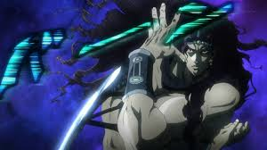

Touch Me
I Dare You to Click me
Hoo Then Do A Double click
Link- click here
KARS
-
Kars is part of a race of humanoid beings who lived underground to hide from the sun yet were worshipped by humans as deities or demons. While the rest of his people were content, Kars wanted his people to achieve their full potential and created the Stone Mask.
- After he transforms into the Ultimate Life Form, his IQ is stated to be 400; a level far, far higher than that of even the most intelligent human. Superhuman Senses: Kars can sense the heat and air pressure around him by forming antennae.
- As Kars is about to kill JoJo, JoJo holds up the Red Stone of Aja, causing the island to erupt and launch them into the sky. Kars disappears while JoJo rests on the Earth that dealt the final blow. On Feb 28, 1939, Joseph Joestar is pronounced dead.
